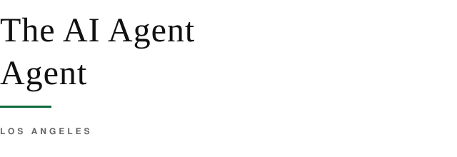

New logo system
Built for a real talent desk, not a script-font AI kit. Primary recommendation: horizontal lockup (AA monogram + Georgia wordmark). Portrait is separate identity proof for Who / LinkedIn.
Recommended primary: Option A — horizontal lockup.
Clean at small sizes, agency-legible, green authority block, no fake handwriting.
A · Primary lockup (recommended)
B · Green wordmark
C · Stacked

D · Monogram AA
E · Stamp
Portrait · agent photo (B&W)

Noah Weiss
Direct eyes. Black tee. Calm face. Works as the human proof that The AI Agent Agent is a who, not a what.
Keep color for personal social if you want. Use B&W on the site / LinkedIn for agent gravity.